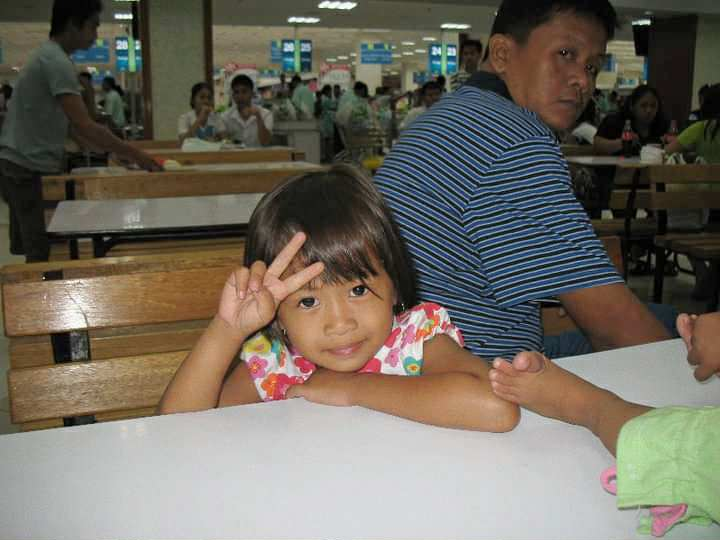
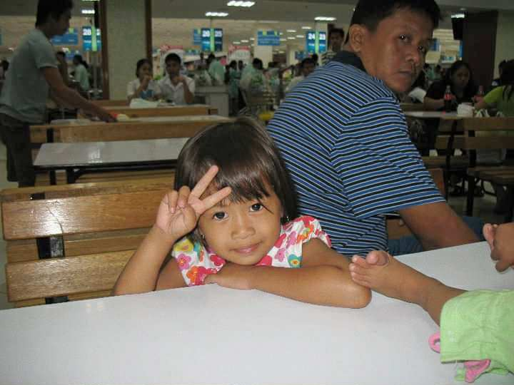

Hello, I'm
Khryztine Chey Villamor
A second-year college student currently taking up the program Bachelor of Science in Information Systems at Lyceum of Southern Luzon, Inc. – Balayan Campus. As a learner in the field of technology, I am continuously building my knowledge and skills in areas such as programming, data management, system analysis, and the design and development of information systems. I aim to become a competent professional who can contribute to innovative technological solutions. I am committed to enhancing my academic performance, improving my technical abilities, and gaining practical experience that will prepare me for future roles in the IT industry.

Academic Background
I began my elementary education at Baclaran Elementary School Central in Brgy. Baclaran, Parañaque City, where I studied from 2011 to 2018. I then continued my studies at Maria Paz Fronda National High School in Brgy. Malibu, Tuy, Batangas, completing my Junior High School from 2018 to 2022. For Senior High School, I attended Lyceum of Southern Luzon, Inc. in Brgy. Lanatan, Balayan, Batangas from 2022 to 2024, under the Technical-Vocational-Livelihood (TVL) track, specializing in Information and Communications Technology (ICT). I am now pursuing my college education at the same institution, taking up the Bachelor of Science in Information Systems, where I am currently enrolled (2024–Present).
My time in Senior High was also a significant milestone in my personal growth, as I had the honor of serving as the Supreme Student Council President for the School Year 2023–2024. I led a student body of over 113 students, representing their concerns and promoting their welfare within the school community. I organized and presided over council meetings, worked collaboratively with faculty and administration, and spearheaded various student programs and events that aimed to foster school spirit, unity, and academic motivation. I represented the student body in official activities and ensured open communication between students and school leadership. Additionally, I managed a council budget of over ₱10,000, strategically allocating funds for student activities, educational resources, school events, and community engagement initiatives. This role helped enhance my leadership, decision-making, communication, and organizational skills that continue to guide me today.
Biography: How It All Started
I was born on May 4, 2006, and I hold the place of being the first daughter, first grandchild, and first niece in my family—roles that came with both affection and expectations. Growing up, I would not describe myself as exceptionally gifted, yet I was certainly not without capability. I simply learned and grew at my own pace. I enjoyed spending time both independently and with other children, finding happiness in play, imagination, and ordinary moments. I spent my early years in the city, where life was vibrant and constantly moving. The streets were always full of energy, and walking around never felt dull because the surroundings were always lively and awake. I have one sibling, my younger sister Myka, who is two years younger than me. Despite being different in personality, we grew closely together, supporting one another through every stage of our childhood.
Throughout my school years, I was not a consistent honor student. While I did my best, academic awards were not something I often received. The recognition I remember most was for perfect attendance, which I earned regularly—not because I was the top of my class, but because I showed up every day with the willingness to learn. In many ways, that taught me the importance of commitment, effort, and simply continuing even when things are difficult. However, my life changed significantly in 2018, when I lost my father. I was only 11 years old at the time. His passing was a moment that shaped me deeply, introducing me to grief far earlier than I ever expected. It was a painful chapter, but it also made me more resilient, more understanding, and more mature in how I view life and the people I love.
 
